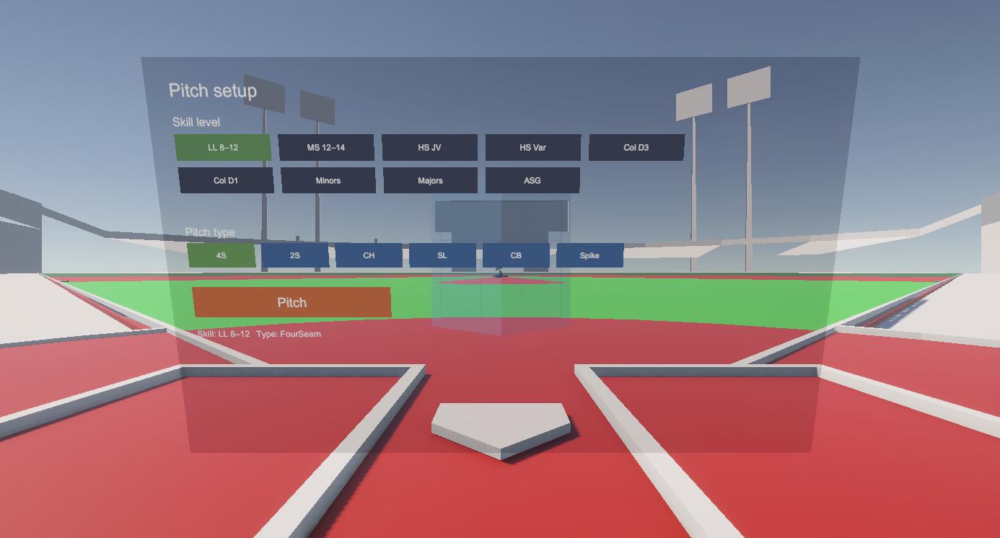
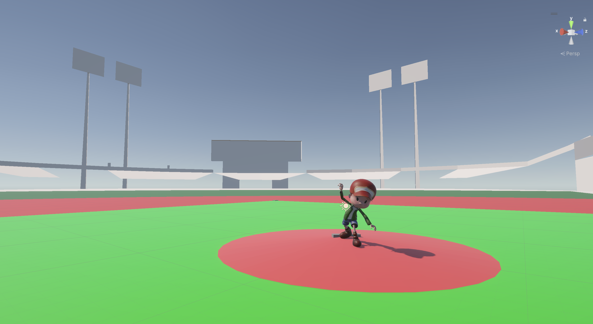

XR / 3D · Independent project
A Unity catching-practice prototype with pitch selection, difficulty controls and trajectories demonstrated on desktop.
Role
Design and Unity integration; AI-generated code
Status
In progress
Platform
Desktop prototype; VR intended
Stack
Unity · Blender · C#

The prototype explores repeatable catching practice without a live pitcher. Headset performance and training benefit have not been verified.
I designed the controls and integrated pitch selection, trajectories and strike-zone detection in Unity. AI generated all code.
Pitch profiles control speed and break so the same catching situation can be explored repeatedly. The prototype’s physics accuracy has not been verified.
Pitch profiles
Fastball, curveball and slider options vary the proposed pitch behavior.
Pitch trajectories
Selection and difficulty controls change the ball’s trajectory toward the catching position.
Catcher scenarios
Strike-zone detection supports the prototype; measured catching or framing benefit is not established.
Unity integration
Unity and Blender supported scene and prototype work. A separate skeletal throwing rig does not yet have a verified portfolio capture.

Where it stands
The available recording shows desktop pitch selection and trajectories. Headset performance, training benefit and physics accuracy remain unverified.